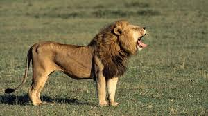

The lion (Panthera leo) is a large cat of the genus Panthera, currently ranging only in Sub-Saharan Africa and India. It has a muscular, broad-chested body; a short, rounded head; round ears; and a dark, hairy tuft at the tip of its tail. It is sexually dimorphic; adult male lions are larger than females and have a prominent mane that which extends from the head to the shoulders and chest. The lion inhabits grasslands, savannahs, and shrublands. It is an apex and keystone predator, preying mostly on medium-sized and large ungulates. It is usually more diurnal than other wild cats, but when persecuted, it adapts to being active at night and at twilight. It is a social species, forming groups called prides. A lion pride consists of related females and cubs, and a few or one adult male who is unrelated to the females. Groups of female lions usually hunt together. Adult males often compete to keep or gain their membership in the pride. During the Neolithic period, the lion ranged throughout Africa and Eurasia, from Southeast Europe to India, but it has been reduced to fragmented populations in sub-Saharan Africa and one population in western India. It has been listed as Vulnerable on the IUCN Red List since 1996 because populations in African countries have declined by about 43% since the early 1990s. Lion populations are untenable outside designated protected areas. Although the cause of the decline is not fully understood, habitat loss and conflicts with humans are the greatest causes for concern. The lion has been extensively depicted in sculptures and paintings, on national flags, and in literature and films. It is one of the most widely recognised animal symbols in human culture. Lions have been kept in menageries since the time of the Roman Empire and have been a key species sought for exhibition in zoological gardens across the world since the late 18th century. Cultural depictions of lions have occurred worldwide, particularly as a symbol of power and royalty. They figure prominently as symbols and deities in ancient religions.

home